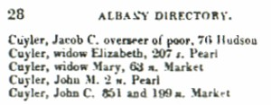

by
Stefan Bielinski
The Albany Cuyler family is descended from Hendrick and Anna Schepmoes Cuyler who settled in New Amsterdam during the 1650s.
Establishing themselves in Albany by 1664, their sons and daughters had married children of the first settlers thus creating a permanent Cuyler presence in Albany and its environs. By 1697, brothers Abraham and Johannes Cuyler were Albany insiders. In 1712, their sister married Dominie Petrus Van Driessen.
The third generation spread out in the upriver region but maintained its Albany focus. The Cuylers were outstanding civic leaders throughout the community's first century. Johannes, his son, Cornelis Cuyler, and his son, Abraham C. Cuyler each served as mayor of colonial Albany.
In 1756, three Cuyler-named households were listed on the Albany census.
Two decades later, the family's position was compromised somewhat by the Toryism of royalist mayor Abraham C. Cuyler and some of his kin. At the same time, other Cuylers were ardent revolutionaries. With the end of the war, several Cuyler branches left America in exile. Mayor Cuyler's family re-located to Canada. Others established themselves in Africa.
 In 1790, six Cuyler-named households were listed on the city census. In 1816, the city directory listed five Cuyler households in the older parts of the booming new city! Albany's Cuyler Street is named for this prominent, pioneer family. Antiquarian and city historian Cuyler Reynolds was their descendant!
The Cuyler family of early Albany has numerous descendants and has been used by places and organizations across the United States.
 Sources: The most comprehensive printed source on the family was
compiled by Maud Churchill Nicoll. Descendant
Cuyler Reynolds paid special attention
to his forebears. The Afrikaans language Het Geslacht Kuilart by J. W. Schaap and H. H. J. Kuilart (South Africa, 1984), includes many family portraits - but, because of language, remains otherwise indecipherable! Internet resources are numerous but still without distinction!
Sources: The most comprehensive printed source on the family was
compiled by Maud Churchill Nicoll. Descendant
Cuyler Reynolds paid special attention
to his forebears. The Afrikaans language Het Geslacht Kuilart by J. W. Schaap and H. H. J. Kuilart (South Africa, 1984), includes many family portraits - but, because of language, remains otherwise indecipherable! Internet resources are numerous but still without distinction!
first posted: 12/18/06